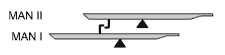

Každá klaviatura (myšleno jak manuálová, tak pedálová) je u varhan
spojena s konkrétní vzdušnicí (někdy s několika vzdušnicemi). Toto uspořádání
je nezáměnné a vyplývá z konstrukce nástroje. Varhaník, hrající na jedné
z klaviatur tak může používat jen ty hlasy, které jsou postaveny na
vzdušnici touto klávesnicí ovládané. Omezení z toho plynoucí se dá obejít
pomocí spojek. Spojky jsou zpravidla složité zařízení, sestavené z komponentů
typických pro daný typ traktury (mechanické, pneumatické, elektrické
či kombinované). Podívejme se teď blíže na nejjednodušší konstrukci spojky tj. variantu
se současně pohyblivými klávesami. Spojení klaviatur se zde děje přímým
mechanickým spojením odpovídajících si kláves (je možné spojovat manuály
navzájem i pedál k manuálu). |
Tento obrázek představuje háčkovou (zubovou)
spojku. Ke klávesám obou manuálů jsou připevněny háčky, které se v klidové
poloze pohybují těsně kolem sebe. Spojka se zapíná povysunutím horního
manuálu (MAN II) dopředu. Tím se háčky (jejich „zuby“) do sebe navzájem
zaklesnou a stisknutá klávesa spodního manuálu (MAN I) s sebou táhne i
klávesu (MAN II) nad sebou. Je zachována jednosměrnost spojky - hra na
horním manuálu nemá na spodní manuál vliv. |
 |
Na této animaci, doplněné o schématické znázornění
traktury a vzdušnic, je znázorněna hra na varhany při vypnuté spojce.
Manuály II a I jsou vůči sobě v takové poloze, že zuby háčků do sebe navzájem
nezapadají a každý z manuálů ovládá jen svou odpovídající vzdušnici (MAN
I ovládá vzdušnici I a MAN II vzdušnici II). Posunutím MAN II o několik
milimetrů dopředu (následující animace) dojde k zaklesnutí háčků do sebe
a k zapnutí spojky: |
|
Sespojkované manuály pracují tak, že stisk klávesy
na MAN I způsobí automaticky stisk připojené klávesy i v MAN II, což rozpohybuje
obě připojené traktury a otevře ventily v obou vzdušnicích I a II současně.
Manuál II přesto dále pracuje samostatně tj. ovládá jen ventily ve své
vzdušnici II, spojka tedy opravdu pracuje jen jednosměrně. Spojení II/I
tedy není totéž, jako spojení I/II. Zde je znázorněno spojení II/I tedy
„stažení“ hlasů z druhého manuálu do prvního (z II do I), jinými slovy
- hlasy druhého (MAN II) teď znějí i na prvním (MAN I).
Spojku tohoto provedení nelze zapínat v okamžiku, kdy se hraje na spodním (MAN I) manuále - zuby spojky by se na stisknutých klávesách nemohly do sebe zaklesnout a po posunutí horního manuálu by bránily v návratu klávesy (tón by zůstal znít), případně by během pohybu manuálu mohlo dojít k poškození mechanismu spojky (vyhnutí či ulomení háčku). Pokud varhanní literatura předpokládá zapnutí spojky, předepisuje většinou v příslušném místě generální pauzu, během které se provedou příslušná nastavení. Jiným typem spojky působící přímo na klávesy je vahadlová (špalíčková) spojka. Na následující ilustraci jsou znázorněny už jen klávesy (jako dvouramenné páky) a mechanismus spojky bez navazující traktury a vzdušnic. |
Mezi klávesami spojovaných manuálů se nacházejí malé
dřevěné špalíčky (vahadélka), upevněné pohyblivě ke společné liště, která
prochází napříč celou klávesnicí. Špalíčků je tolik, kolik je kláves a
každý je volně otočný kolem malé osičky. Celý tento mechanismus, tj. lišta
se špalíčky, se může pohybovat ve vodorovném směru. Na koncích kláves
spodního manuálu jsou připevněny speciálně tvarované klínky ze dřeva potaženého
kůží (kvůli snížení hlučnosti), na spodní straně kláves horního manuálu
jsou ve stejném místě ploché ocelové či bronzové pružiny, jejichž napětí
je možné doregulovat pomocí stavěcího šroubku. Je tak možné při sespojkování
doregulovat každý pár kláves samostatně. Funkci spojky objasňuje animace
níže: |
Přesunutí lišty s vahadélky doprava odpovídá zapnutí
spojky (pomocí jakého mechanismu v hracím stole k tomuto přesunu dojde
teď není podstatné). Po zapnutí spojky stisk klávesy ve spodním manuálu
(MAN I) způsobí pohyb připojeného horního (MAN II) a tím společnou akci
navazujících traktur obou manuálů současně. Jde opět o spojku II/I, první
manuál (MAN I) tedy ovládá současně i druhý (MAN II) při zachování samostatné
funkce druhého (MAN II) tj. horního manuálu. Spojka opět pracuje jako
jednosměrná. Její výhodou je (na rozdíl od předchozího provedení) možnost
zapínání i během hry na obou manuálech, spojkovému mechanismu během zapínání
i vypínání stisknutá klávesa nevadí.
Dalším ze způsobů, jakým je možné realizovat spojku na klávesách, je kolíčkové provedení. Mezi konci kláves dvou sousedních manuálů je umístěna masivní dřevěná lišta (napříč po celé délce klávesnice), ve které je vyfrézována drážka ve tvaru písmene C. Lišta je v místě každé klávesy provrtána a do otvorů jsou vloženy krátké kulaté dřevěné kolíky. Konce kolíků jsou okoženy a jsou na nich navléknuty kožené kroužky, které vymezují jejich pohyb a brání jejich vypadnutí z lišty (na animaci nejsou tyto kroužky pro jednoduchost znázorněny): |
Spojka se zapíná pootočením lišty s kolíčky o 90
stupňů, čímž se kolíčky dostanou do svislé polohy a vzpříčí se mezi koncem
spodní klávesy a plochou pružinou na spodní straně klávesy horní. Regulační
šroubek na pružině umožňuje nastavit její předpětí a seřídit tak šířku
štěrbiny, ve které se pohybují kolíčky (seřídit chod sespojkovaných kláves).
Pootočení lišty zpět do polohy, ve které jsou kolíčky vodorovně, odpovídá
vypnutí spojky. Tento typ spojky je opět možné zapínat i v případě, kdy
varhaník hraje na prvním manuálu, stisknutá klávesa mechanismu spojky
při zapínání i vypínání nevadí.
Další konstrukce spojky využívá jednoramenné páky ke
spojení kláves manuálů, které jsou zde konstruovány rovněž jako jednoramenné
(více informací o použití pák naleznete v popisu komponentů
mechanické traktury a dále v popisu spojek působících přímo na trakturu). |
Horní poloha lišty s pákami odpovídá vypnuté spojce.
Jejím spuštěním dolů se sníží osy otáčení (bod opěry) pák a spojka se
zapne. Při stisku klávesy ve spodním manuálu (MAN I) se přes táhla a páku
stáhne i klávesa v horním (MAN II) a s ní se následně uvedou do pohybu
i obě traktury. Jedná se opět o spojení II/I, které označujeme jako „stažení“
kláves druhého (MAN II) manuálu do prvního (MAN I). Spojka je jednosměrná,
hra na horním manuálu (MAN II) nemá na spodní vliv. Spojku této konstrukce
je možné libovolně zapínat či vypínat i během hry na spodním manuálu. Prohlédneme-li si pozorně předchozí mechanismus spojky všimneme si, že páka spojky funguje současně jako převod - její ramena nejsou stejně dlouhá. Páka díky tomu stáhne horní klávesu sice větší silou, ale na menší dráze. Ventil ve vzdušnici druhého manuálu (MAN II) se tak otevře méně, než u spodního manuálu (MAN I). Aby nedošlo k rozladění tónu díky menšímu množství vzduchu proudícího do píšťaly, musí být ventily konstrukčně upraveny tak, aby i při menším otevření dodávaly dostatečný objem vzduchu (několikanásobně předimenzovány). Výhodou tohoto uspořádání pak je příjemnější hra - při připojení druhého manuálu se síla, potřebná k ovládání klávesy dolního (MAN I) manuálu nezdvojnásobí - nepřičte se k ní celá síla, potřebná k ovládání druhého manuálu ale jen síla, dělená převodovým poměrem spojkové páky. Na rozdíl od předchozích konstrukcí spojek, u kterých musely být spojované klaviatury v bezprostřední blízkosti (sousedství) díky omezené velikosti prvků realizujících spojení (háčky, kolíčky), lze konstrukci spojky s pákou použít i u vzdálenějších klaviatur, tedy např. i mezi manuálem a pedálem. Větší vzdálenost se překoná pomocí delšího abstraktu, jak je patrné z následujícího vyobrazení: |
Všechny dosud popsané spojky pracovaly na principu
působení přímo na připojenou klávesu
- tedy element, který se nachází na samém začátku traktury. Spojky jsou
plně funkční, vyskytuje se ale u nich už dříve popsaný nepříjemný jev
„utíkání promačkávaných kláves“ při hře na oba manuály. Tuto nectnost
nemají spojky, jejichž mechanismus působí až dále v traktuře (myšleno
dále od vlastní klávesy) a jejichž některá možná řešení si popíšeme dále:
Díky působení spojky „hlouběji“ v traktuře se při hře na sespojkované klaviatury pohybují jen klávesy té klaviatury, na kterou se právě hraje, v připojené klaviatuře zůstanou klávesy nehybné. Správná konstrukce takové spojky společně s příslušným vyvážením kláves přispívá značně ke komfortu hry. Efekt zvýšení odporu na klávese díky připojení dalšího manuálu ale vždy zůstane, i když jej lze pečlivým provedením mechanismu a použitím převodů částečně snížit. U mechanické traktury jej ale z principu nelze úplně eliminovat. |
 |
V mechanismech spojek druhého typu (bez
propadání kláves) jsou využívány především páky různých druhů - jedno
i dvouramenné, se stejnými i různými délkami ramének, rovné i různě zakřivené,
vyrobené ze dřeva, kovu i z kombinovaných materiálů. |

Každá klávesa, vlastně každý pár odpovídajících
si kláves je vybaven soustavou takových pák a dalších elementů v traktuře.
Na obrázku je příklad takové skupina pák, namontovaných na společné liště
(trámku). Pohybem této lišty zpravidla ve svislém směru se ramena pák
dostanou do kontaktu s dalšími elementy traktury (zarážkou na abstraktu
či další pákou) a umožní funkci spojky (její zapnutí). Funkci spojky s
jednou skupinou pák na společné liště objasňuje následující animace. |
 |
První animace ukazuje na řezu klávesnicemi a jimi
ovládanými vzdušnicemi funkci varhan při vypnuté spojce. Stisk klávesy
na manuálech způsobí otevření ventilu v odpovídající vzdušnici nezávisle
na sobě. |

Horní manuál (MAN II) ovládá ventil ve vzdušnici
přes horní dvouramennou páku a abstrakt (pro zjednodušení je zde vynechána
hřídel, která bude v konkrétní konstrukci varhan určitě využita). Klávesa
prvního manuálu (MAN I) ovládá ventil vzdušnice I pomocí abstraktů a dvou
úhelníků (rovněž zde je pro zjednodušení vynechána hřídel). Současně konec
klávesy nadzvedá druhou dvouramennou páku, která se pohybuje volně (její
druhý konec se pohybuje po táhle od výše položené páky aniž by dosáhl
na zarážku na jeho konci). Manuály jsou tedy rozpojeny - každý ovládá
jen svou vzdušnici.
|
Zapnutí spojky se provede spuštěním rámu (lišty) s pákami směrem dolů. Páka se opře o konec klávesy spodního manuálu (MAN I) a druhým ramenem zůstane viset na zarážce na konci táhla od páky z druhého manuálu (MAN II). Stisk klávesy spodního manuálu (MAN I) tak způsobí synchronní pohyb obou pák a tím současné otevření ventilů v obou vzdušnicích, samotná klávesa horního manuálu (MAN II) ale zůstane v klidu (za předpokladu, že je správě vyvážená). Spojka je opět přísně jednosměrná (MAN II je připojen k MAN I, ne obráceně). Budeme - li hrát na horním (MAN II) manuálu, na spodní (MAN I) to nebude mít vliv. Spojka se tedy zapíná spuštěním rámu s pákami. Následující animace ukazuje jedno z možných konstrukčních provedení ovládacího mechanismu. Varhaník vytažením či zasunutím manubria na hracím stole ovládá svislý pohyb rámu s pákami. S ohledem na docela velkou sílu, která je k ovládání rámu nutná, je častější ovládání pomocí nožní páky - šlapky umístěné nad prahem pedálu. V některých varhanách je mechanismus zdvojený a umožňuje ovládání rukou i nohou dle potřeby (a zvyklostí) varhaníka. |
|
Ve všech dosud uvedených příkladech byla popsána funkce jedné spojky, v reálných varhanách je spojek vystavěna obvykle celá řada. Možnosti jejich současného použití jsou ale omezeny velikostí síly, kterou je nutné vyvinout na sespojkované klávese pro otevření spojených ventilů. Z tohoto důvodu varhanáři budují jen některé z možných spojek. U nástrojů s více manuály se většinou spojují jen dvojice bezprostředně nad sebou (IV/III, II/I) a vynechávají se spojky typu (IV/I, III/I). V opačném případě by zvýšení odporu při zapnutí všech spojek (IV/I, III/I, II/I) způsobilo hru na prvním manuále velmi obtížnou až nemožnou (existují i výjimky - dobře promyšlená a precizně provedená traktura spojek s převodovými pákami umožňuje i použití více spojek současně, toto provedení ale vyžaduje i úpravy v konstrukci vzdušnic a ventilů viz. varhany u sv. Ducha v Opavě). Spojky směrem do pedálu (I/P, II/P...) toto omezení nemají, zvýšení odporu při ovládání pedálu je nevýznamné a většina varhaníků jej ani nepostřehne. V souvislosti se spojkami je nutné se zmínit ještě o jednom speciálním druhu spojky, a tou je tzv. „spojkový“, nebo taky zavěšený pedál. Jedná se o trvalé spojení manuálu do pedálu - pedál tak stále ovládá příslušné tóny v manuálu. Buduje se především v těch nejmenších varhanách a pozitivech, u kterých pedál nemá vlastní hlasy (vzdušnici) a využívá tak jen hlasy z manuálu. Jeho konstrukce je podrobně popsaná v kapitole o klaviaturách. |

Funkci spojek v praxi si můžete vyzkoušet na této interaktivní animaci řezu varhanami s dvěmi manuály a pedálem a třemi spojkami (II/I, I/Ped, I/Ped). Po zapnutí vybrané spojky (spojek) a „stisku“ klávesy či pedálu (myší na červené šipce) můžete pozorovat otevírání příslušných ventilů ve vzdušnicích. Animace se spustí po kliknutí na obrázek v samostatném okně. |
Poznámka: Tato stránka je součástí Anatomie varhan ®, © Ing. Petr Bernat. Všechny animace © Konrad Zacharski